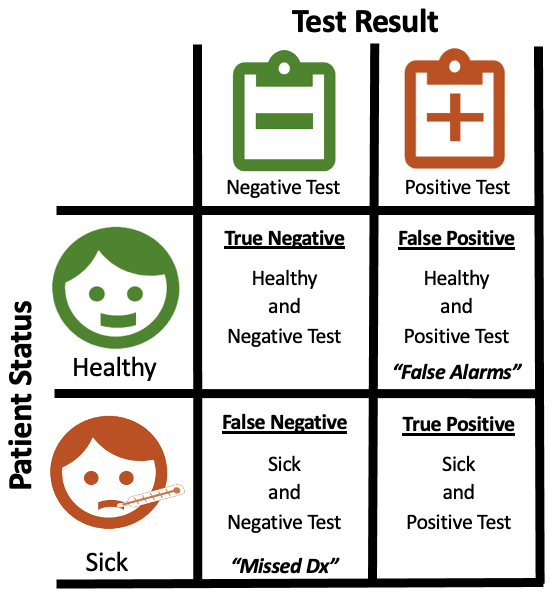

Diagnostic accuracy: from the confusion matrix to the cath lab
How much should you trust a medical test? Part one explains the four ways a test can be right or wrong and the numbers built from them. Part two lets you push a cohort of chest-pain patients through a test and watch those numbers turn into unnecessary procedures and missed disease.
Part 1: The confusion matrix · Part 2: The chest-pain triage simulator
Part 1: The confusion matrix
Imagine you are an engineer trying to develop a test that identifies patients who have a disease. Every patient is either healthy or sick, and your test returns either a negative result ("healthy") or a positive result ("sick"). Cross those two facts and you get four possible outcomes. Laying them out in a two-by-two grid gives you a confusion matrix.
The problem is that there are several different ways a test can be right, and just as many ways it can be wrong. A test that never misses a sick patient might also raise a lot of false alarms. A test that never bothers a healthy person might let sick patients slip through. The confusion matrix lets us articulate those strengths and weaknesses quickly, which is why doctors, engineers, and regulators all lean on it.
Terminology
- Healthy: the patient does not have the disease.
- Sick: the patient does have the disease.
- Positive test: the test says the patient is sick.
- Negative test: the test says the patient is healthy.
- True positive \((TP)\): a correct call that the patient is sick.
- True negative \((TN)\): a correct call that the patient is healthy.
- False positive \((FP)\): the test says sick, but the patient is healthy. A false alarm.
- False negative \((FN)\): the test says healthy, but the patient is sick. A missed diagnosis.
"True" and "false" describe whether the test got it right. "Positive" and "negative" describe what the test said. Keep those two axes separate and the rest follows.

A worked example
Say there are 10 patients: 5 healthy and 5 sick. Our "test" is a single question, "Have you thrown up today?" Not a great test, but stick with me. Suppose 3 of the 5 sick patients have thrown up and none of the healthy patients have.
- True positives: 3 (sick, and the test caught them)
- False negatives: 2 (sick, but the test said healthy)
- True negatives: 5 (healthy, and the test agreed)
- False positives: 0 (no healthy patient was flagged)
This test is excellent at identifying healthy people (5 of 5) and mediocre at identifying sick people (3 of 5). In the language below, it is very specific but not very sensitive.
The metrics
Sensitivity: of all the sick patients, what fraction did the test catch? A sensitive test rarely misses disease.
$$Se = \frac{TP}{TP + FN}$$Specificity: of all the healthy patients, what fraction did the test correctly clear? A specific test rarely raises false alarms.
$$Sp = \frac{TN}{TN + FP}$$Positive predictive value: if the test comes back positive, what is the chance the patient is actually sick? This is the number a patient really wants to know, and it depends on how common the disease is.
$$PPV = \frac{TP}{TP + FP}$$Negative predictive value: if the test comes back negative, what is the chance the patient is actually healthy?
$$NPV = \frac{TN}{TN + FN}$$Accuracy: what fraction of all calls were right? Beware: if a disease is rare, a test that says "healthy" to everyone can be extremely accurate and completely useless.
$$Acc = \frac{TP + TN}{TP + TN + FP + FN}$$For the example above: sensitivity is 60%, specificity is 100%, PPV is 100%, NPV is 71%, and accuracy is 80%.
Which matters more?
In a perfect world every test would be right 100% of the time, and the only thing a clinician would need to know is which test to order. Unfortunately very few tests are perfect, so clinicians must weigh a test's accuracy against its cost and its risks, and we have to make trade-offs depending on what we are trying to detect.
Neither sensitivity nor specificity is more important in general. It depends on the situation. A screening test for a dangerous, treatable disease should be sensitive: missing a case is costly, and a false alarm just leads to a follow-up test. A confirmatory test before a risky surgery should be specific: you do not want to operate on someone who was never sick. Think about a pregnancy test. Is it more important to correctly identify someone who is pregnant, or to be able to tell someone definitively that they are not? Different people in different situations will answer that differently, and that is exactly the point. Part two makes that trade-off concrete.
Part 2: The chest-pain triage simulator
When someone arrives at the emergency department with chest pain, the question is whether they have obstructive coronary artery disease (CAD). The definitive answer comes from a catheterization, which is invasive and expensive, so most patients first get a cheaper, non-invasive test. A positive result sends them on to the cath lab; a negative result sends them home. This model follows a cohort through that single decision. It is exactly the arithmetic from part one, drawn as a flow of patients instead of a table. Move the sliders to see how a test's accuracy, and how common the disease is, change who ends up in the cath lab, who goes home, and how many of those calls are wrong.
- Sent to cath lab0
- …without obstructive CAD0unnecessary catheterizations (false positives)
- Discharged0
- …with obstructive CAD0missed disease (false negatives)
- Positive predictive value0%chance a positive test is right
- Negative predictive value0%chance a negative test is right
What to notice
- Prevalence dominates. Drag prevalence down to 5% and even a good test sends more healthy people to the cath lab than sick ones. The same test in a high-risk clinic looks far better. That is why positive predictive value, not sensitivity, is what a patient with a positive result should care about.
- The two errors have different prices. A false positive costs a catheterization the patient did not need. A false negative sends someone home with undiagnosed disease. Which one you tolerate depends on what happens next in the pathway.
- A single number hides the trade-off. "Accuracy" can stay flat while the mix of missed disease and unnecessary procedures swings wildly. Sensitivity and specificity, plotted against a real population, show what accuracy hides.
What this leaves out
Real triage is a chain of decisions, not one. Patients with a normal first ECG may be observed for several hours with repeat tests, a positive stress test may lead to imaging before anyone considers catheterization, and each step has its own cost, wait time, and risk. This simulator collapses all of that into one test so the effect of accuracy is easy to see. Extending it to a multi-step pathway with costs attached is the natural next version.
About this project
The confusion matrix write-up started in 2022 as a way to explain to non-clinicians why sensitivity and specificity are not interchangeable. The simulator came first, in late 2021, as a D3 v5 Sankey with a hand-patched layout; this version uses D3 v7 and d3-sankey, and the icons are from that original build. They were separate pages until it became obvious they were one idea. Wikipedia's confusion matrix article covers the full zoo of derived metrics if you want more.